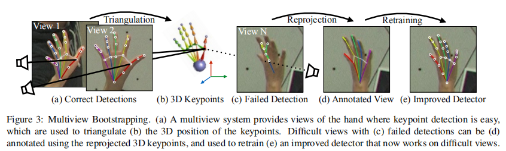
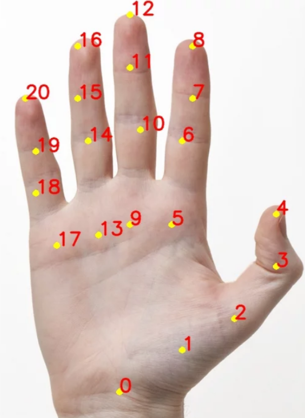
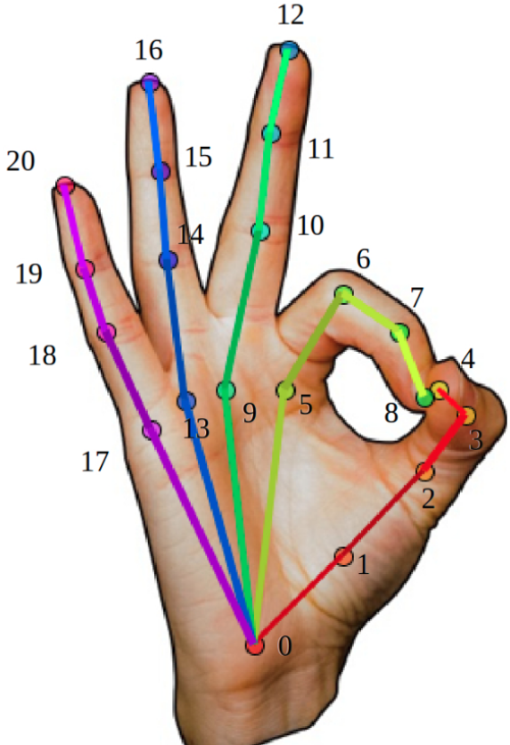

1.2. 手部关键点检测原理
学习目标
- 目标
- 掌握模型的训练流程
- 掌握模型的输出
- 应用
- 无
1.2.1. 模型介绍
美国卡耐基梅隆大学智能感知实验室(CMU Perceptual Computing Lab)发布了手的关键点检测模型。
Hand Keypoint Detection in Single Images using Multiview Bootstrapping
模型原理

模型处理流程
首先：
- 首先采用少量标注的人手部关键点图像数据集
- 训练类似于人体姿态关键点所使用的 CPM - Convolutional Pose Machines 网络，以得到手部关键点的粗略估计
- 采用了 31个 HD 高清摄像头 从不同的视角对人手部进行拍摄
然后：
- 将拍摄图像送入手部关键点检测器，以初步得到许多粗略的关键点检测结果
- 有了同一手部的不同视角的关键点，则构建关键点测量(Keypoint triangulation)，以得到关键点的 3D 位置
- 关键点的 3D 位置被从 3D 重新投影到每一幅不同视角的 2D 图片，并采用 2D 图像和关键点，进一步训练网络
- 以鲁棒的预测手部关键点位置，这对于关键点难以预测的图片而言是尤其重要的
- 采用这种方式，通过少量几次迭代，即可得到较为准确的手部关键点检测器
模型特点：
关键点检测器和多视角图像(multi-view images) 一起构建了较为准确的手部关键点检测模型
精度提升的主要因素是采用了多视角的图片
1.2.2. 模型输出
手部关键点检测模型输出
手部关键点检测模型共输出 22 个关键点，其中包括手部的 21 个点，第 22 个点表示背景。
关键点位置：

关键点连接：

1.2.3. 总结
- 多视角的手部图片可以提高模型识别精度